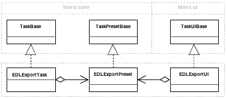
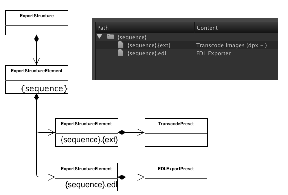

Navigation
- index
- modules |
- next |
- previous |
-
 Python Dev Guide »
Python Dev Guide »
The Task is the object which actually generates an output.
The Processor is responsible for taking selected items and spawning Tasks based on the export structure defined.
- Process as Sequence spawns tasks which generate output for a whole sequence.
- Process as Shot spawns tasks which generate output for each shot within a sequence.
- Process as Clips spawns tasks for each clip selected within the bin.
Each of these processors contains an Export Template which defines which tasks to spawn, their output path and any parameters required.
In order for the hiero C++ application to interact with the python objects within the export system, we define a set of C++ interface classes.
These C++ classes are reflected into Python using Shiboken (Shiboken is the name of the PySide Binding Generator) and inherited by various parts of the export system.
ITask, ITaskPreset, ITaskUI, IProcessor, IProcessorUI, IExportRegistry, IExportUIRegistry, IExportStructure and IExportStructureElement.
It should never be necessary for users to interact with these classes in python, because in every case all functionality is implemented in the derived python classes.
There are three objects you need to create for your custom task. Task, TaskPreset and TaskUI.
The separation between Task and TaskUI is to ensure that in the future if/when its possible to run hiero without UI, that none of the exporters have a dependency on ui code. This is also a logical separation, because its necessary to create many instances of the Task, but only ever one instance of the TaskUI.
The TaskPreset contains any parameters which need to be shared between the Task and the TaskUI. The TaskPreset is used to link the Task and TaskUI within the registry and is automatically serialized to XML.
addUserResolveEntries provides a hook for users to add custom export tokens.
The function is passed a hiero.core.ResolveTable object to which custom tokens can be registered.
Here is an example of adding a simple resolve token globally across all tasks and processors. Because it applies to all exports, we inject it into the TaskBase class.
import hiero.core
def global_addUserResolveEntries(self, resolver):
resolver.addResolver("{proj}", "First four characters of the project.", lambda keyword, task: task.projectName()[:4])
# This token can be applied to ANY export so add it to the base class
hiero.core.TaskPresetBase.addUserResolveEntries = global_addUserResolveEntries
Some tokens only relate to specific export processors. Here is an example of adding custom tokens to the ShotProcessor.
Adds two tokens. {sh} which resolves to the first two characters of the shot name, and {dstin} which resolves to the sequence timecode of the shot. Because they both reference the shot, they can only work with the shot processor.
from hiero.exporters.FnShotProcessor import ShotProcessorPreset
def shot_addUserResolveEntries(self, resolver):
resolver.addResolver("{sh}", "First two characters of the shot (trackitem) name.", lambda keyword, task: task.shotName()[:2])
def task_shot_timecode(task):
trackItem = task._item
sequence = task._sequence
dstin = trackItem.timelineIn()
# convert frame count to timecode string HMSF
timecode = hiero.core.Timecode.framesToHMSF(dstin, sequence.framerate(), sequence.dropFrame())
# Cast integers to string and concatenate with underscores
return "_".join([str(integer) for integer in timecode] )
resolver.addResolver("{dstin}", "Shot timecode separated by underscores", lambda keyword, task: task_shot_timecode(task) )
# This token only applies to the Shot Processor as it references the shotname
ShotProcessorPreset.addUserResolveEntries = shot_addUserResolveEntries
The ExportStructure, built by the Processors and serialized into the ProcessorPreset, contains a composite tree of ExportStructureElement objects. Each object represents a level in the tree. Leaf elements (no children) contain a TaskPreset object which represents the type of Task output for that path and any parameters specific to that Task.
